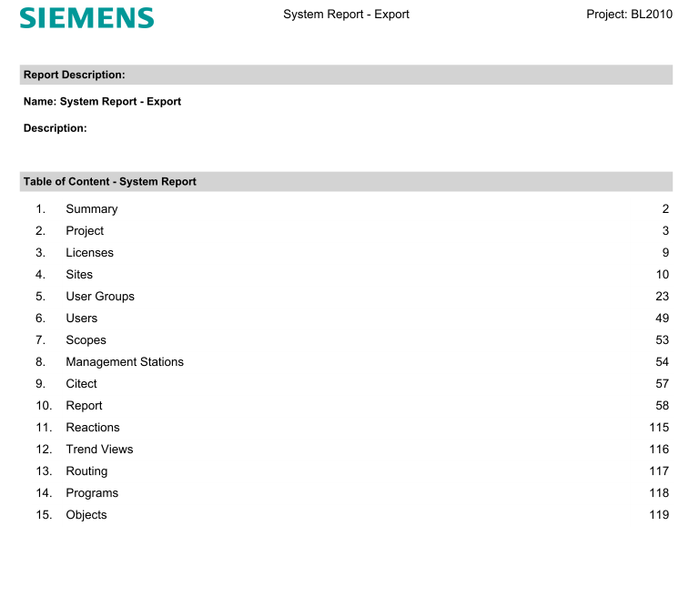
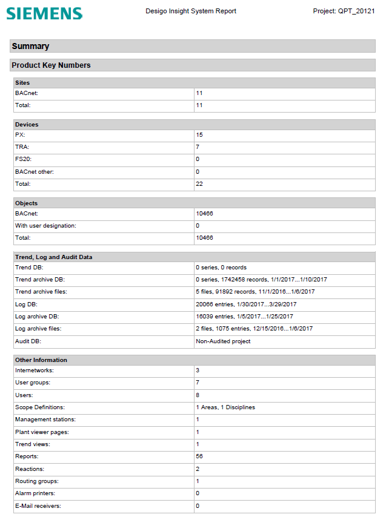

Migration from Desigo Insight to the Management Platform
A migration report and migration package can be created in Desigo Insight for migration. You can export project data with the migration package and migrate it to the Desigo CC management platform.
Migration report: A system report is generated as a pdf file. The system report displays a summary of the project data. Page 2 displays the summary of the project data. This report helps, together with the sales notes to estimate the cost and effort for the migration.


Migration package: A package with graphics, trend views, trend data, log data, and subsystem data is generated together with the system report (PDF) in a zip file. You can set the data to be included in this package for a specific project.
Further information
- Recommended Timeline for the Migration Workflow
- Technical Migration Workflow
- Sales and Migration Notes for Desigo Insight
- Desigo Insight Data Acquisition
- Desigo Insight Graphics Migration
- Desigo Insight Data Migration
- Desigo Insight Internetwork
- Modify Desigo Insight Graphic Libraries
- Troubleshooting Desigo Insight Migrations